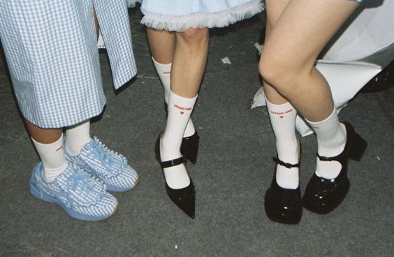
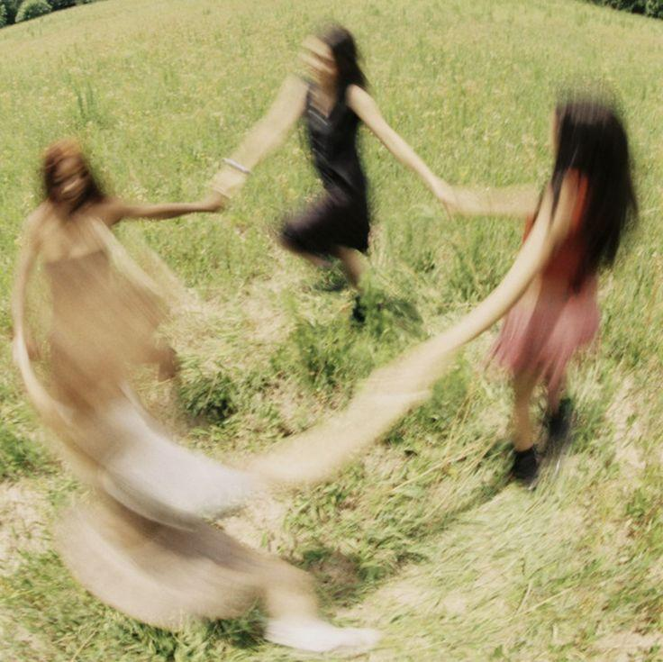

hold your friendships close.
Hold them close, the ones who stay,
Through scattered light and shadowed day.
The ones who know your truest name,
And love you still, without acclaim.
A laugh, a look, a quiet word,
The comfort in not needing heard.
They stitch the seams when you come undone,
And warm the night before the sun.
So plant your roots in hearts that care,
And water what you both can bear.
For friendship, when it’s deeply grown,
Becomes the safest kind of home.
They see the you behind the show,
The gentle fears you never show.
They stand their ground when others flee,
And guard your softest memory.
So hold them close, don’t let them fade,
Through time’s relentless, shifting braid.
For in this world that moves so fast,
True friends are roots that hold you fast.
next→